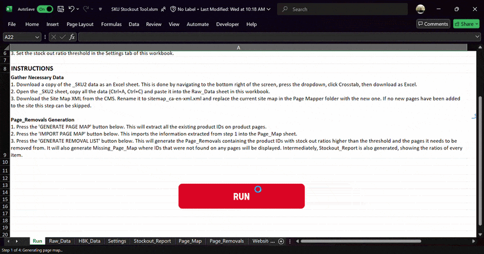
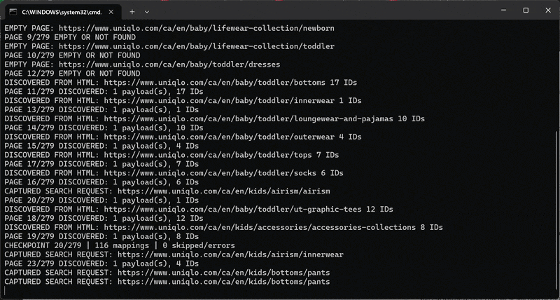
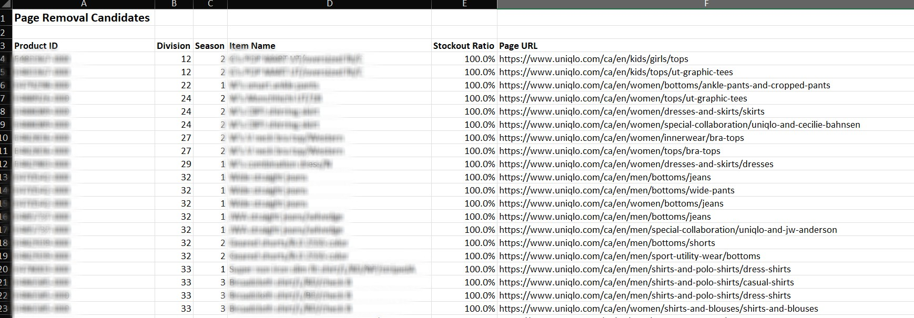
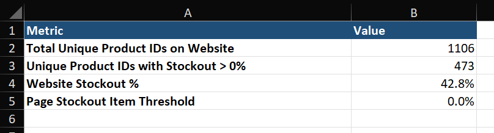

Product Crawler
An Excel-based tool I built to help Inventory Control identify products with low or no stock across the UNIQLO Canada website.
Inventory Control needed a way to identify products with low or no stock across the website so they could keep track of pages that needed attention.
However, there was no record of which products appeared on which pages. The existing process involved manually checking products and guessing which pages they appeared on, making it too time-consuming to do regularly.
The information needed for the process already existed, but it lived in different places.
Stock information was available in Tableau and the website sitemap was available through the CMS, but neither connected product IDs to the pages where they appeared.
I needed to build that missing connection while keeping the workflow simple enough for a non-technical user to run.
I built a Python and PowerShell crawler that scans 250+ product pages and identifies the product IDs found on each URL. I then connected the crawler to an Excel workbook using VBA so the process could be started directly from Excel.
- Import stock data from Tableau into Excel.
- Provide the website sitemap to the tool.
- Run the crawler directly from the Excel workbook.
- Identify product IDs across 250+ website pages.
- Map product IDs to their stockout information.
- Generate the final outputs in Excel.


Rather than requiring the team to run Python, PowerShell, or the crawler itself, I packaged the crawler as an executable and connected it directly to the Excel workbook.
The user only needs the packaged tool installed and can start the entire process from the Excel workbook. Instructions are built into the sheet, helper sheets are hidden, and a Settings tab allows the stockout threshold to be adjusted.
The current crawl takes approximately 10–15 minutes to complete with minimal user interaction.
Once the crawl finishes, the workbook produces two main outputs: an actionable list of pages requiring attention and a summary of website stockout performance.


The current version is still being refined and prepared for presentation to GHQ.
Future iterations could incorporate sales goals and GA4 data to provide additional context around stockout and website performance.